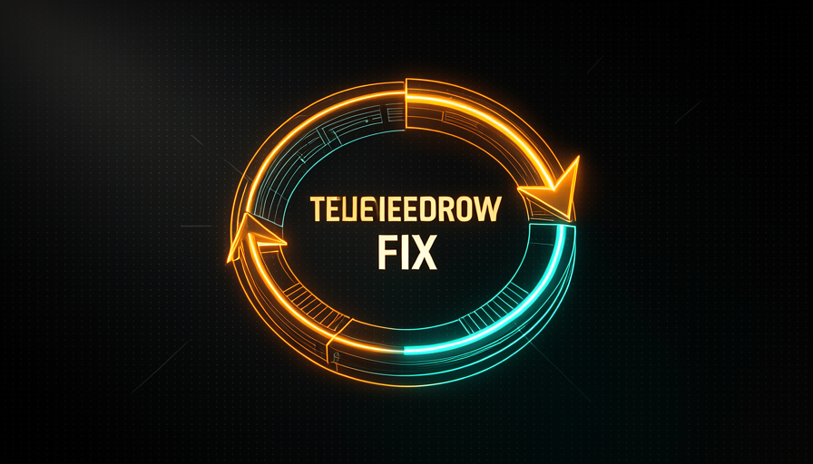
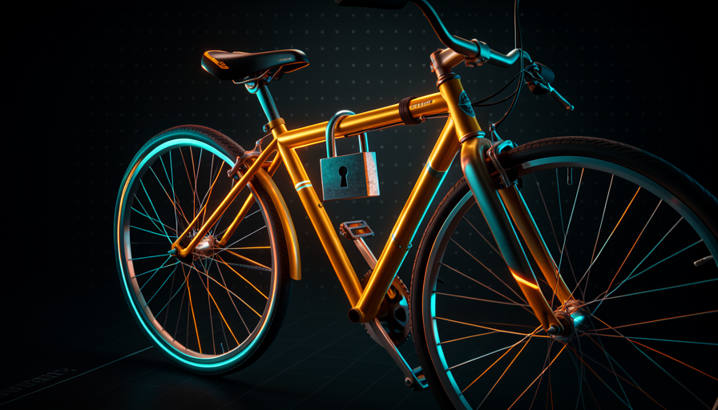
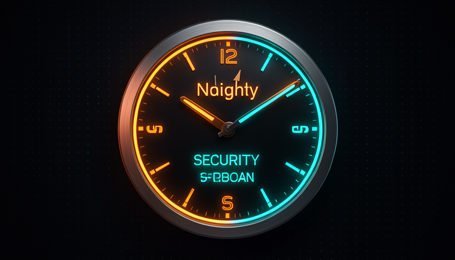

📖 Glossário vivo (leia antes — volte sempre que precisar)
Esta trilha já assumiu o vocabulário base (modelo, agente, skill, AFK, sandbox, fila). Aqui ficam os termos novos deste módulo — fixe estes:
💡 Não precisa do modelo caro
🧠 Imagine assim: um detetive medíocre num bairro bem iluminado acha mais crimes do que um detetive genial vendado num quarto escuro. Não é só talento — é estar no lugar certo, com a lanterna certa. Achar bug profundo é a mesma coisa: o lugar e a luz (o harness) pesam tanto quanto o "QI" do modelo.
Existe um mito sedutor: "se eu usar o modelo mais inteligente (e mais caro), ele vai achar aqueles bugs profundos que nenhum outro acha". Na conversa, contou-se que um modelo encontrou bugs profundos e falhas de security que outros modelos não tinham visto. A reação fácil é: "viu? precisa do modelo top". Pocock discorda na raiz. Nas palavras dele: "você poderia descobrir esses bugs com modelos mais baratos se olhasse nos lugares certos e desse a ele o prompt/harness certo". Traduzindo: o que faltava aos "outros modelos" não era inteligência — era direção.
Isso conecta direto com o que você viu na Trilha 1 (Economia de tokens): um harness bom deixa um modelo "mais burro" fazer o mesmo trabalho. Aqui a ideia é a mesma aplicada à descoberta de defeitos. Em vez de pagar caro por um modelo gênio rodando uma vez, você monta um sistema que coloca um modelo simples no lugar certo, repetidamente. O porquê importa: modelo caro é um custo que cresce a cada chamada; um sistema bem-direcionado é um ativo que rende todo dia. O erro comum é confundir "achou um bug difícil" com "preciso sempre do modelo difícil" — quando o que achou o bug, de fato, foi onde e como você olhou.
O segredo não é o cérebro do modelo — é onde você aponta a lanterna (o harness).

⚠️ Erro comum de iniciante
Concluir "preciso do modelo mais caro pra achar bugs sérios". Quase sempre a falha estava ao alcance de um modelo barato — só faltava apontar ele pro lugar certo, com o prompt certo. Pague pelo sistema, não pelo cérebro.
Em 1 frase: bug profundo se acha com lugar certo + prompt certo — não com o modelo mais caro.
Indo mais fundo (opcional): por que o modelo barato basta aqui?
Achar um bug não exige raciocínio sobre o projeto inteiro de uma vez — exige olhar um pedaço pequeno e bem delimitado com uma pergunta clara ("esta função valida a entrada?"). Quando você reduz o escopo e dá o prompt certo, o problema vira fácil o bastante pra um modelo simples. Modelo caro brilha em tarefas grandes e ambíguas; revisão fatiada é o oposto disso — então você economiza sem perder qualidade.
⏰ Cron de security review
🧠 Imagine assim: um vigia que faz a ronda do prédio. Ele não checa todos os 30 andares por noite — checaria mal. Ele checa um andar por noite, com calma, e em um mês cobriu o prédio inteiro, várias vezes. O cron de security review é esse vigia.
A receita concreta de Pocock: rode um cron diário de security review que, a cada dia, checa uma parte nova do repositório, usando um modelo relativamente simples. A palavra-chave é rotativo: você não tenta varrer o projeto inteiro de uma vez (caro, raso e estourando o context window). Você fatia. Hoje a pasta de autenticação; amanhã a de pagamentos; depois a de uploads. Em poucas semanas o repo inteiro foi auditado — e o ciclo recomeça, pegando o que mudou.
Por que agendado e não "quando eu lembrar"? Porque a lição que Pocock tira de um incidente é direta: "o que você aprendeu? Que há problemas de segurança no seu código — você deveria ter algo que roda e checa por mais no futuro." Segurança não pode depender da sua memória num dia corrido. O porquê do modelo simples: review fatiado é tarefa pequena e bem-escopada — exatamente onde o modelo barato basta (tópico 1). O erro comum é montar um cron que revisa o repo todo de uma vez: fica caro, vira ruído e ninguém lê o relatório gigante. Pequeno, diário, rotativo, acionável.
Abaixo, o artefato copiável: uma linha de crontab que dispara, todo dia às 6h da manhã, um agente headless de security review apontado para a "fatia do dia". Cole no seu crontab (crontab -e) e ajuste o caminho do repo:
# Edite com: crontab -e
# Roda TODO DIA às 06:00 — checa uma fatia rotativa do repo (dia-do-mês % nº de pastas).
0 6 * * * cd /caminho/do/repo && DIRS=(auth payments uploads api db) && TARGET=${DIRS[$(( $(date +\%d) \% ${#DIRS[@]} ))]} && claude -p "Faça um SECURITY REVIEW so da pasta ./$TARGET. Liste cada falha (arquivo:linha), severidade (alta/media/baixa) e a correcao sugerida. Se nada grave, responda 'OK'. Saida em markdown." --model claude-haiku-4-5 --allowedTools "Read,Grep,Glob" >> ~/security-reviews/$(date +\%F)-$TARGET.md 2>&1
Recuperação rápida: por que o cron de security review checa só uma fatia por dia?
Em 1 frase: um vigia agendado que revisa uma fatia por dia cobre o prédio inteiro sem custar uma fortuna.
📡 Telemetria → issue → fix
🧠 Imagine assim: o alarme de fumaça da sua casa não só apita — ele liga sozinho pros bombeiros, que já chegam sabendo o cômodo. Telemetria → issue → fix é montar esse encanamento: o erro em produção aciona uma cadeia que termina (quase) sozinha numa correção.
Aqui a auto-melhoria deixa de ser proativa (o cron) e vira reativa, mas automatizada. O exemplo de Pocock: um bug de telemetria aparece numa ferramenta como o Sentry. Em vez de você ler, copiar e abrir um chamado na mão, o sistema cria uma issue automaticamente e a marca com um label (etiqueta) tipo agent:explore. Esse label dispara um agente — exatamente o padrão de fila do módulo 4.4.
O agente então retorna dado estruturado: dá pra corrigir já, ou precisa de um humano? Se for direto, ele implementa, abre o PR, e o fluxo segue para review — eventualmente com uma tag de auto-merge (entra sozinho) ou um ping pra você decidir. A frase que organiza tudo isso é de Pocock: "empurre os checkpoints de human-in-the-loop o mais para perto possível do resultado final." Ou seja: a máquina faz o caminho todo; você só entra perto da linha de chegada, onde sua atenção rende mais. O erro comum é deixar o pipeline fazer auto-merge de tudo — sem nenhum gate humano nas mudanças que mexem em comportamento, você troca trabalho manual por risco silencioso.

🔬 Exemplo resolvido: do erro no Sentry à correção
Cenário ponta a ponta — um TypeError intermitente no checkout:
- Telemetria: o Sentry agrupa 312 ocorrências de
Cannot read 'total' of undefinedemcheckout.ts. - Issue automática: um webhook cria a issue
#812com o stack trace e aplica o labelagent:explore. - Agente explora: disparado pelo label, retorna estruturado — causa: carrinho vazio não tratado; dificuldade: trivial; pode corrigir AFK: sim.
- Fix + PR: o agente adiciona o guard
cart?.total ?? 0+ um teste, abre o PR#813linkando a issue. - Checkpoint no fim: como mexe em comportamento, NÃO faz auto-merge — pinga você, que revisa em 30s e aprova.
Você só apareceu no passo 5 — o checkpoint foi empurrado para perto do resultado final.
Em 1 frase: o erro em produção aciona, sozinho, a cadeia issue→agente→fix; você só decide perto da linha de chegada.
🔒 A causa raiz do bug
🧠 Imagine assim: roubaram sua bike. Você compra outra bike. Roubam de novo. Compra outra. A pergunta certa não é "qual bike comprar" — é "por que ela fica roubável? Cadê o cadeado?". Corrigir o bug é comprar outra bike. Achar a causa raiz é instalar o cadeado.
Essa é a virada de chave do módulo, e Pocock resume numa imagem que gruda: "se alguém vive roubando sua bike, talvez compre um cadeado." Corrigir o bug que apareceu é tratar o sintoma. A pergunta que de verdade melhora o sistema é sobre a causa raiz (root cause): por que esse bug existiu tanto tempo sem você notar? O que faltou no seu processo — um teste, uma revisão, um lint — para que ele passasse batido até virar incidente?
Repare na diferença de nível. "Achei um bug de security e corrigi" para na bike. "Há falhas de security no meu código, então vou montar algo que roda e checa por mais no futuro" instala o cadeado — é literalmente o cron do tópico 2 nascendo de um incidente. Cada bug, em vez de só um conserto, vira uma pergunta: que guarda-corpo do sistema deixou isso passar? A resposta vira test suite, review automatizado ou refactor. O erro comum é parar feliz no fix: você fecha a issue, sente que resolveu — e o mesmo tipo de bug volta por outra porta, porque o cadeado nunca foi comprado.

Indo mais fundo (opcional): os "5 porquês"
Uma técnica clássica pra chegar na causa raiz é perguntar "por quê?" cinco vezes. Bug no checkout → por quê? Carrinho vazio não tratado → por quê? Ninguém testou esse caso → por quê? Não havia teste de carrinho vazio → por quê? A suíte não cobre estados de borda → por quê? Não temos um cron/checklist que cobra esses casos. No quinto "porquê" você não está mais olhando o bug — está olhando o sistema que o deixou passar. É ali que se compra o cadeado.
Em 1 frase: não compre outra bike — pergunte por que ela fica roubável e instale o cadeado.
♻️ Loops de auto-melhoria
🧠 Imagine assim: uma academia onde cada treino fica registrado, e o registro ajusta o próximo treino. Você não fica mais forte "de graça" — fica porque o sistema de treino aprende com cada sessão. Loops de auto-melhoria são isso aplicados ao seu código.
Juntando tudo: um sistema auto-melhorável é feito de vários laços que se reforçam. Pocock nomeia três ingredientes concretos: test suites (que pegam regressões antes de chegarem ao usuário), human reviews (que dão insight no sistema, não só no código) e refactor (que reduz a chance de o próximo bug aparecer). Cada incidente alimenta esses laços: virou teste, virou checklist de review, virou uma parte mais limpa do código.
O detalhe crítico — e aqui ele cruza com o módulo 4.4 (Loops × Filas) — é que "auto-melhorável" não significa "deixa um loop infinito rodando sozinho e some". Significa montar gatilhos (cron, telemetria, label) que colocam tarefas numa fila, e laços de feedback que tornam cada passagem melhor que a anterior. Você continua sendo o rei: prioriza, revisa os pontos perigosos, ajusta os gatilhos. O erro comum é fantasiar um sistema 100% autônomo que se conserta para sempre sem supervisão — isso não existe; o que existe é um sistema que faz o trabalho repetitivo e te chama nos momentos que importam.
Em 1 frase: detectar → corrigir → prevenir → aprender, e cada volta deixa o sistema mais forte que a anterior.
🛠️ Revisar o sistema
🧠 Imagine assim: uma fábrica não inspeciona só os produtos que saem — inspeciona a linha de montagem que os produz. Se a linha está torta, todo produto sai torto. Revisar só o código é checar produtos; revisar o sistema é endireitar a linha.
A tese que fecha o módulo é a frase mais importante de Pocock aqui: "revise não só o código — revise também o SISTEMA que produz o código." Na era agêntica, quem escreve a maior parte do código é o agente. Então seu foco de revisão sobe um andar: menos "essa linha está certa?" e mais "o processo que gerou essa linha é confiável?". Os prompts, as skills, os crons, os gates de review — é esse encanamento que, afinado, faz o próximo bug nem nascer.
Isso também responde uma pergunta perigosa que aparece no próximo módulo (4.6): "quem revisa a IA que diz que está tudo bem?" Resposta: você, revisando o sistema. Por isso vale checar, de vez em quando, alguns PRs que o agente garantiu estarem ok — não por desconfiança paranoica, mas para melhorar o sistema com o tempo. Abaixo, o resumo prático em forma de checklist copiável — rode-o sempre que um bug escapar, para transformar o conserto em melhoria de sistema:
Bug escapou? Antes de fechar a issue, COMPRE O CADEADO: [ ] CAUSA RAIZ — por que esse bug existiu tanto tempo sem ninguém notar? [ ] TESTE — adicionei um teste que pegaria esse caso na próxima vez? [ ] DETECÇÃO — meu cron de security/review olharia essa parte? Se não, ajusto o rodízio. [ ] PROCESSO — que gate (review, lint, label) deixou isso passar? Reforço ele. [ ] SISTEMA — revisei o código OU o sistema que produz o código? (era pra ser os dois) Se você só corrigiu o bug, comprou outra bike. Instale o cadeado.
Recuperação rápida: o que significa "revisar o sistema que produz o código"?
Em 1 frase: revise não só o código, mas a linha de montagem que o produz — é ali que o próximo bug morre antes de nascer.
🧾 Resumo do Módulo
Próximo módulo:
4.6 — Checkpoints & review fluido: como tornar o review sem dor, empurrar o checkpoint pra direita e gravar vídeo+TTS do agente trabalhando.